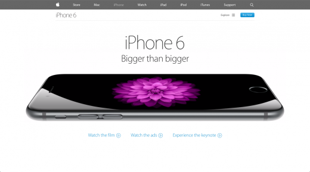
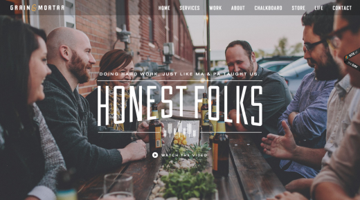

每年，网站设计都在快速进步，每天几乎都有新的设计出现。我可以想象得到，2015年将出现最好的网站，包括2014年已经预测到的许多趋势。随着这些趋 势在2015年左右实现，现在该是时候让我们预测2015年可能出现的新趋势了。每个人都在反思2014年，并展望2015年，下面就让我们看看2015 年可能出现的网站设计趋势。
滚动翻页更流行
今天出现的大多数新网站倾向于更长的页面，并通过滚动方式翻页。随着移动设备越来越受欢迎，以滚动方式浏览显示器上的内容变得越来越常见，正代替点击方式，特别是在设备的主页面上。对于用户来说，以滚动翻页的方式获得信息显然比不断地点击按钮更简单。
主页并非滚动翻页越来越流行的唯一地方。随着超长滚动网站（即一页式网站）日益变得热门，滚动带来的好处也更多，除主页面外的其他许多地方也开始出现这种模 式，比如有关网页以及产品网页等，它们都已成为展示各种内容的简单显示方式。比如，苹果iPhone 6的滚动翻页方式已经扩展到许多地方，可以展示该产 品各种特点和性能。此外，iPhone 6网站也增加了一些流畅的动画，让滚动体验在视觉上变得更具吸引力。

讲故事+互动
对于网站来说，拥有令人感到惊异的内容总是非常关键，而利用这些内容讲故事更是一大优势。2015年的网站设计很可能聚 焦于如何为用户讲故事。比如，Space Needle（美国西雅图地标建筑太空针塔）的网站非常漂亮，可以通过使用讲故事的方式介绍 Space Needle的有关事实，并以滚动翻页的设计予以支持。Space Needle也证明2015年的另一种趋势——互动。网站设计正添加更多 互动和动画元素，以独特和有吸引力的方式帮助介绍内容。在网站设计中加入互动与动画，可以为你的网站带来令人惊讶的因素。比 如，Impossible Bureau网站的互动性就很强，可以对你的滚动和悬停做出回应。

大标题背景图像缺失
过去几年中，网站设计中十分流行大标题背景图像，上面经常有文字说明，这也是大多数访客浏览网站时首先看到的东 西。而在大标题背景图像如此流行的情况下，你的网站如何能脱颖而出呢？采取相反措施。近来出现的一些网站逆势而行，即没有大标题背景图像。我猜，他们这样 做不仅仅是不愿意追随潮流，而且也在寻求提高网站的性能与速度。New Wave Company的网站就体现出这些特点。它使用大标题欢迎访客，大字体 集中在网页中心，但标题后面没有大背景图片。这是一种高雅的做法，效果并不次于其他使用大背景图像的流行网站设计。

剔除非必要设计元素
有一种设计观念认为，当所有非必要元素都被剔除后，网站设计才算完成。2015年，我认为我们能够看到这种观念更 好地体现出来，因为更多网站都在试图通过剔除非必要设计元素实现网站设计的简化。New Wave Company网站中剔除大背景图像的做法就是最好例 证之一。另一个剔除非必要设计元素确保网站简洁的最佳例证是Rareview Digital Agency网站，它也没有使用大背景图像标题问候访客。 设计师们实际上已经消除了许多当前网站上流行的设计元素，比如背景颜色、众多图片以及复杂布局等。相反，他们选择更清晰、简洁的网站设计，在注重设计、图 片以及颜色的当前网站中，这些设计不禁令人眼前一亮。

固定宽度的中心网站布局
过去几年中，大多数网站都使用了以宽度为中心的网站布局，它可以让图片或视觉延伸部分在整个浏览器视口中全部 展现出来。在这种趋势热门前，大多数网站都是固定宽度的，内容处于网页中心，你可以看到网站两侧的终结部分。固定宽度趋势似乎正以更现代的方式回归，只是 网站及其内容部分不再处于视口的边侧，有些网站选择最大宽度，以确保它们的内容处于视口中心。Michele Mazzucco的网站就是如此。

专业高质量自定义摄影
图库照片依然在设计中占有一席之地，但是对于大多数最新出现的网站来说，图库照片开始采取高质量的专业摄影照 片，它们通常是独一无二的，专为网站自定义拍摄的。使用自定义摄影比仅选区图库照片在设计方面取得了更大进步，它让你的网站独一无二，其他网站无法使用同 样的照片。比如，Grain and Mortar网站的自定义照片使用了该网站的大标题，这展现出个性化效果，因为照片上的人和办公场景都是在 Grain and Mortar真实存在的，毕竟没有假办公空间的图库照片！

弹出/滑出应用式菜单
响应式网站设计已经流行了一段时间，可是直到近来，大多数网站设计重点都放在令网站在桌面设备上看起来更好，而 在手机或平板设备上看得过去即可。无论何种设备，响应式网站设计正迈向更好体验。我们正看到这种设计元素向移动设备上转移，并在更广泛地使用。比如 24ways与Rawnet都展示了这种观念，将类似应用和响应式菜单添加到整个网站中，而不仅仅有更小视口的设备上。在这种情况下，这两家网站选择靠左 或靠右的垂直菜单，而不是位于顶部的水平菜单，使用起来更像弹出/滑出应用式菜单，这种技术允许网站应用与响应式设计出现在更小的视口上。

隐藏主菜单
这与上面讨论过的弹出/滑出应用式菜单很像，我期待更多网站可能向首次访问网站的访客隐藏主菜单。只有当访客准备移动和点 击相应图标后，这些隐藏菜单才会显示出来。这种响应式设计技术正开始出现在网站设计中，而非仅仅小的视口中。Brian Hoff Design的新网站 就是最好的例子。他使用网站右上角的汉堡图标隐藏导航功能，直到访客点击它。过去2年，这种行为已经逐渐被接受，访客正习惯在网站应用或手机应用上如此操 作。他将这种模式应用到网站上，无论视口多大，都可帮助确保网站简介，功能完全。

非常大的字体
2014年，字体在许多网站设计中发挥重要作用，我未发现这种趋势在短期内改变的迹象。可是2015年，我看到网站中的 标题和字体变得越来越大。夸张地说，就连天上的飞机可能都能看到地面上的字。当你访问Tiny Giant的网站时，你会看到很大的字体。这实际上是一种 声明，让你很难错过。大字体将继续在2015年的网站设计中发挥重要作用，成为确保提高访客视觉层次的方法。访客首先会看到最大的字体，因为那会首先吸引 你的注意力。

性能与速度
许多设计趋势受需求驱动，以促使网站加载速度更快，消耗的宽带流量更少。这篇文章中讨论的大多数趋势都可能需要减小网站， 为那些手机、平板设备或更慢网络用户寻找更快加载方式。网站设计师和开发者越来越强烈地意识到自己网站的权重，以及用户如何与他们互动。响应式网站设计已 经帮助减轻这些担忧。网速过慢以及设备类型等因素迫使设计师和开发者密切关注它们的文件和网站大小，网站加载速度在不同网速条件下也不尽相同。无需惊 讶，2015年需要加载速度更快、没有滞后感的无缝网站。

稿源：腾讯科技